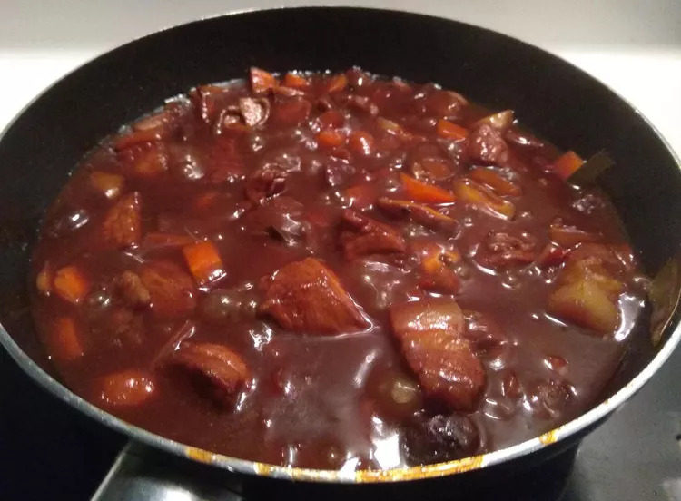

How To Cook Filipino Pork Adobo

Pork adobo is a beloved Filipino dish consisting of pork braised in a savory and tangy sauce made with vinegar, soy sauce, garlic, and other aromatics. It's known for its tender meat and flavorful, balanced sauce. Adobo is more than a recipe; it's a cooking technique where meat, seafood, or vegetables are braised in vinegar and aromatics.
Ingredients
- 2 ½ pounds pork shoulder or pork belly
- ½ cup soy sauce
- ½ cup + 2 tablespoons apple cider vinegar
- 10 peppercorns
- 5 cloves garlic crushed
- 2 bay leaves
- rice to serve
- oil for browning the pork
Steps
- Chop the pork into large cubes. Peel garlic and crush once with the flat side of a knife.
- In a large oiled and heated sauce pan, fry the cubes of pork. You probably will have to do this little by little to make sure the pork is evenly cooked. Remove any cubes of pork that are fully cooked. Do not clean your sauce pan. You want to keep all the flavorful goodness.
- To the sauce pan, add the crushed garlic, peppercorns, bay leaves, apple cider vinegar and soy sauce. Simmer over low heat for at least 1 hour stirring occasionally but not too often!
- It is advisable to let the adobo sit overnight to allow the meat to tenderize and full soak up all the flavor. If you absolutely can’t wait overnight, you can serve it now.
- If you’ve left it overnight, separate the meat from the gelatinous sauce and fry the meat over medium heat until the meat develops a nicely fried crust
- Cook down the adobo sauce so it thickens slightly. Pour this sauce over the fried pork and serve with rice. Enjoy!